How to read the sliders
The pictures are the sample Whirlpool session (41 frames of 25 s from a Celestron Origin), stacked with the default settings, so you can repeat everything here yourself. Phase 4 works on the linear stack, which looks almost black until it is stretched, so every picture below is shown with the same fixed display curve: the sky level of each picture is set to black, and the brightness above it is scaled the same way. That way the slider shows what the step changed, not a difference in how it was displayed.
- Drag, or use the arrow keys
Drag across a picture to move the divider: Before is on the left of it and After on the right. With a keyboard, tab to a slider and use the left and right arrow keys.
- Times
The times are from one run on an 8-core laptop. All of Phase 4 took about 40 seconds of the roughly 70 seconds the whole run took.
- Try it yourself
Run
python originstack.py --from-stack stack.fits -o again.fitson a linear stack to redo only Phase 4, and add--skip-step NAMEto leave a step out (the names are in the headings below). In the desktop app, the Post-processing steps panel switches each step off and on after a run and redoes only what follows it.
The whole chain
First the two ends: the stack as Phase 3 leaves it, and the finished picture after every step below. Between them the sky turns from a green-blue haze to black, the galaxy gains its spiral structure and the noise drops.
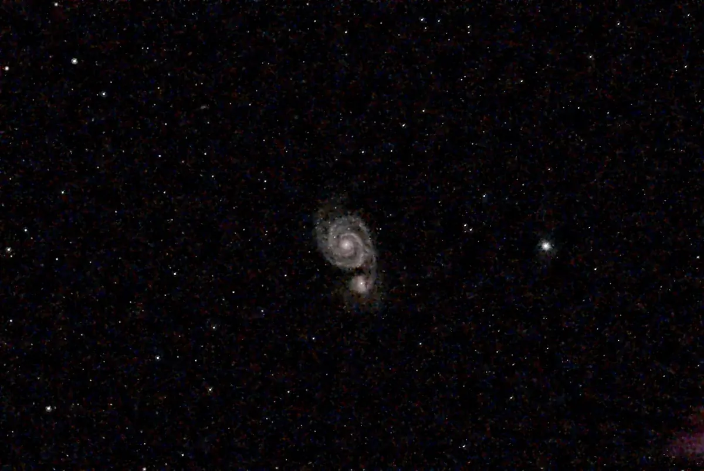
 BeforeAfter
BeforeAfter
Hot pixels (hot_pixel, 0.8 s)
A pixel that stands far above its neighbours in one colour channel is pulled back toward them. Most hot pixels are already removed when the frames are calibrated against the dark; this step catches the ones that survive.
On this session it changed 16 pixels, each by at most about a quarter of its value, and all of them on or next to bright stars. There is nothing to see, so there is no slider here. It matters for sessions that have no darks.
Background (background, 7.4 s)
The sky in a stack is never perfectly flat or neutral: sky glow brightens one corner, and the red, green and blue channels sit at different levels. The background step measures the sky in many small patches between the stars (47 px here), fits a smooth surface through them and subtracts it, then sets all three channels to the same low level so the sky is neutral grey.
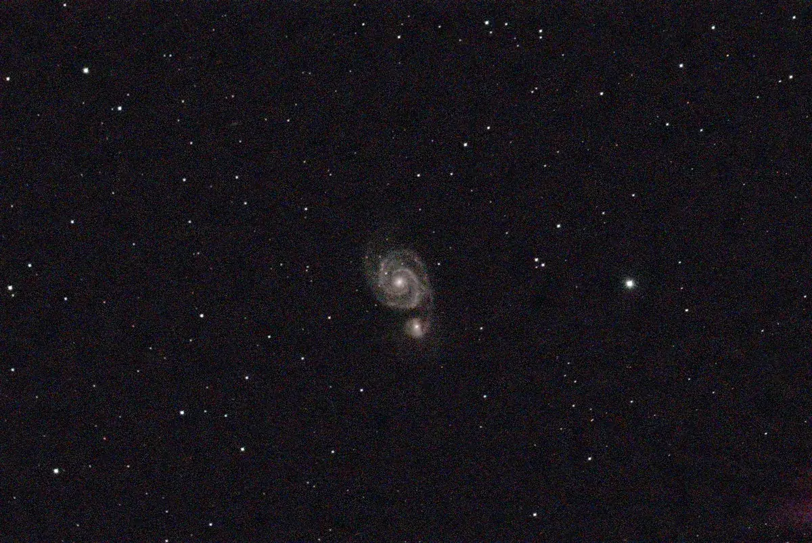
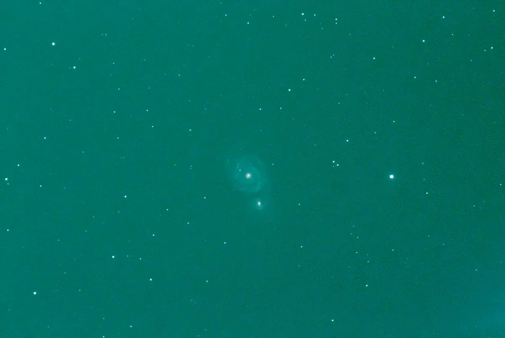
BeforeAfterSwitch it off with --no-background-extraction; the surface is fitted from sky patches between the stars, so the stars are not subtracted with it.
Sharpening and noise: neural-network deconvolution (nn, 26 s)
A stack is blurred a little by the atmosphere and the optics, and every pixel carries noise. This step runs a small neural network that was trained on real sessions to turn a noisy, soft image into a cleaner, sharper one in a single pass. On galaxies --auto keeps 35% of the deconvolver’s output and mixes in 65% of the plain denoiser’s, so faint outer arms keep their contrast. It is the longest step and the one with the biggest effect.
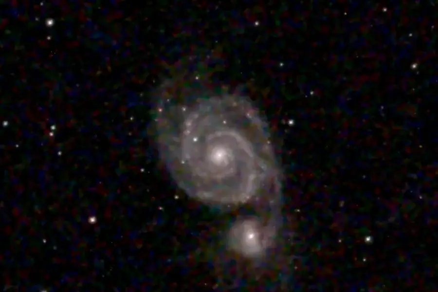
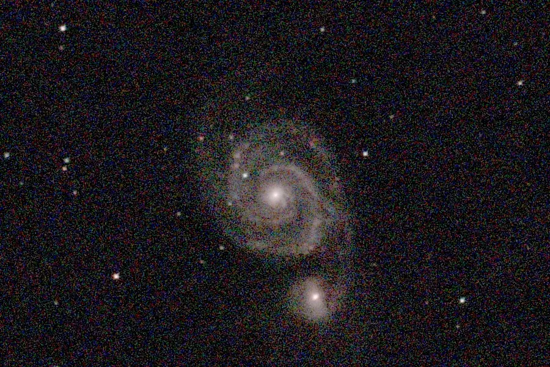
BeforeAfterChoose it with --deconvolve nn. Other denoisers and classical deconvolution (--deconvolve rl and others) are available; --auto picked this one for a galaxy on Origin data. It also works on other cameras: it rescales the image to the star width it was trained on first.
Green noise (scnr, 0.2 s)
A colour sensor has twice as many green pixels as red or blue, and the sky ends up with green-tinted specks. SCNR (subtractive chromatic noise reduction) lowers green where it exceeds red and blue.
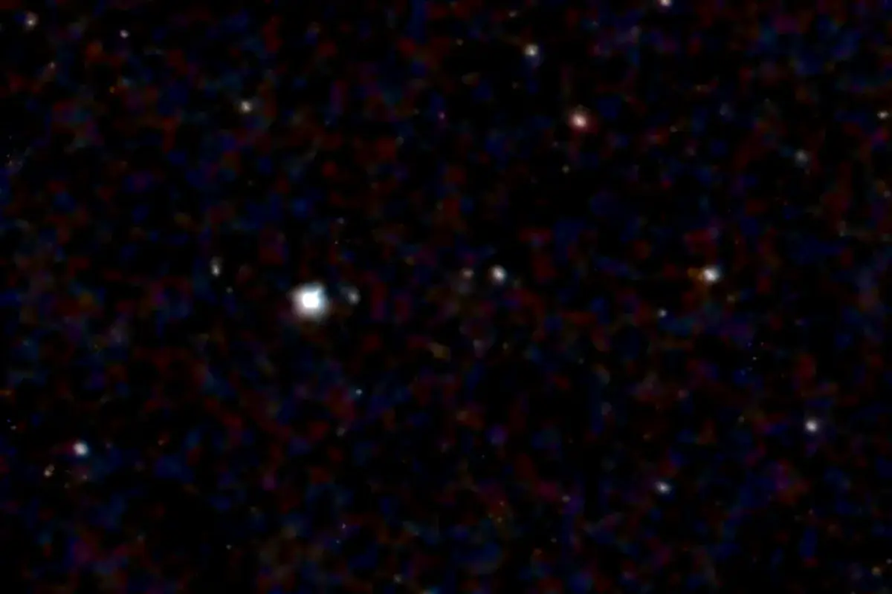
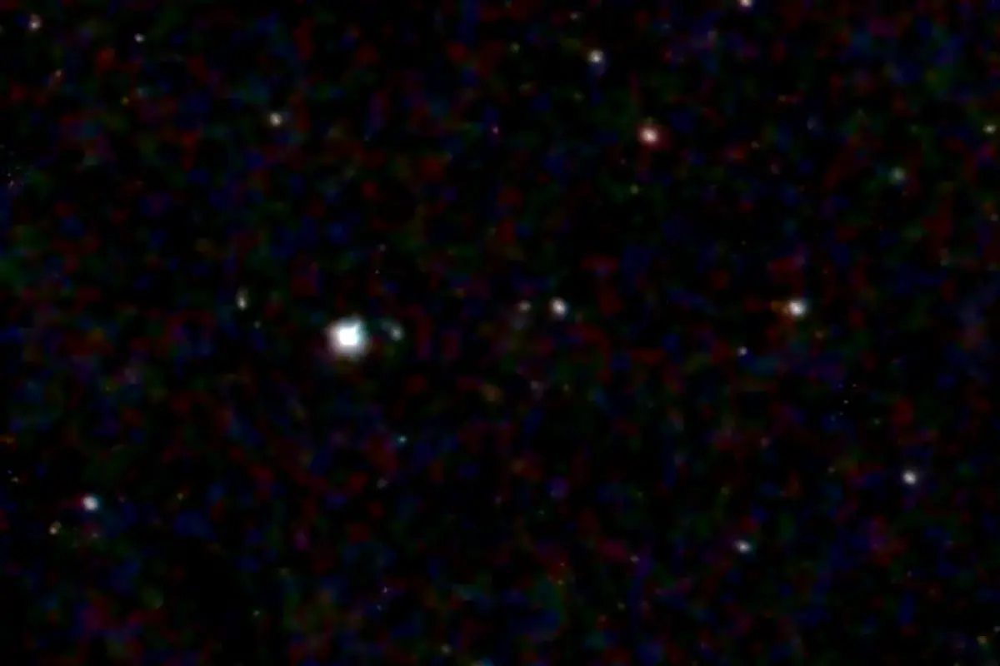
BeforeAfterStar reduction (star_reduce, 0.5 s)
Bright stars spread their light into soft halos that bury the faint detail around them. Star reduction shrinks each star’s profile toward a tighter one (here the typical star width goes from 4.3 px to about 3.5) without touching what is not star. Turn it off with --no-star-reduce.
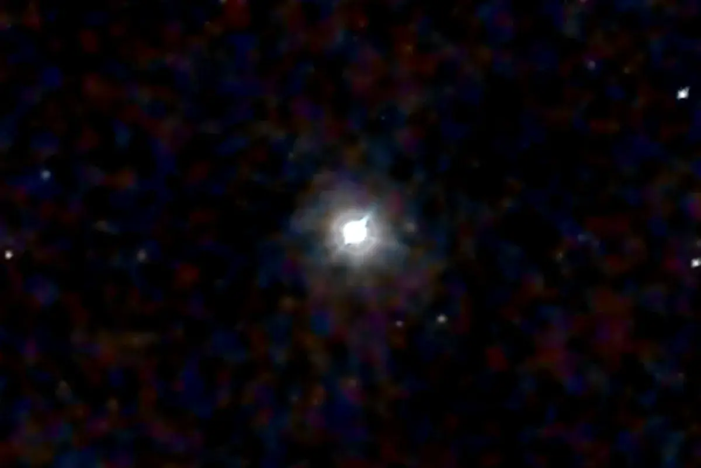
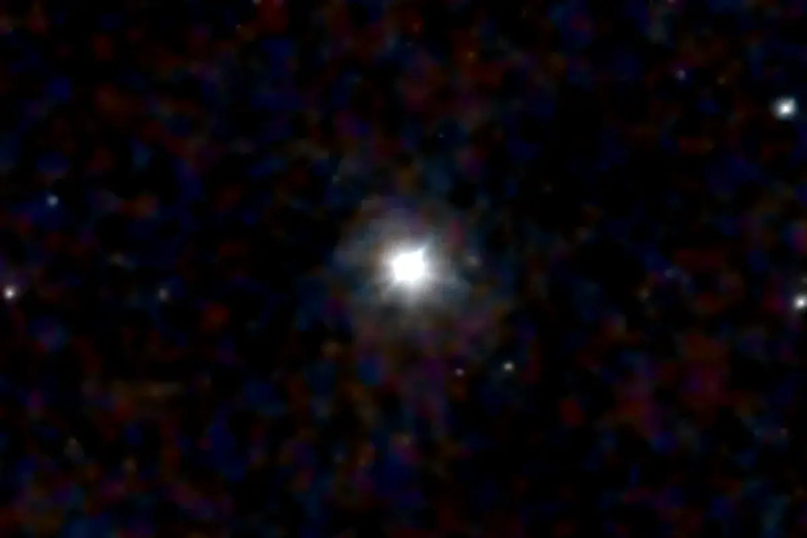
BeforeAfterLocal contrast and the final flatten (local_contrast 1.8 s, sky_neutralize)
The last two steps shape the picture. Local contrast raises the contrast of structure at three scales (about 2, 12 and 40 px, at strength 0.8); --no-local-contrast skips it. The final flatten then measures what is left of the sky, evens it out and sets it to a neutral grey, so the picture’s black point sits in the same place in every channel.
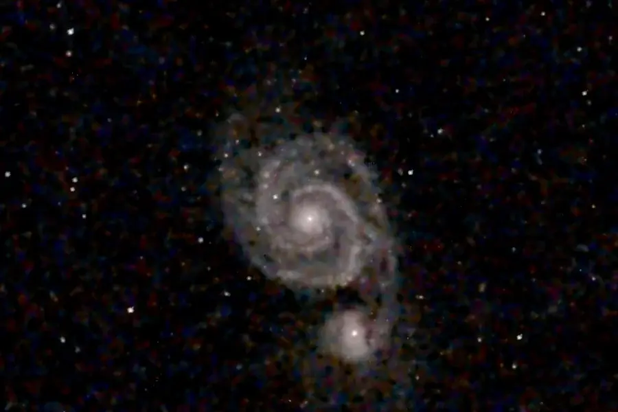
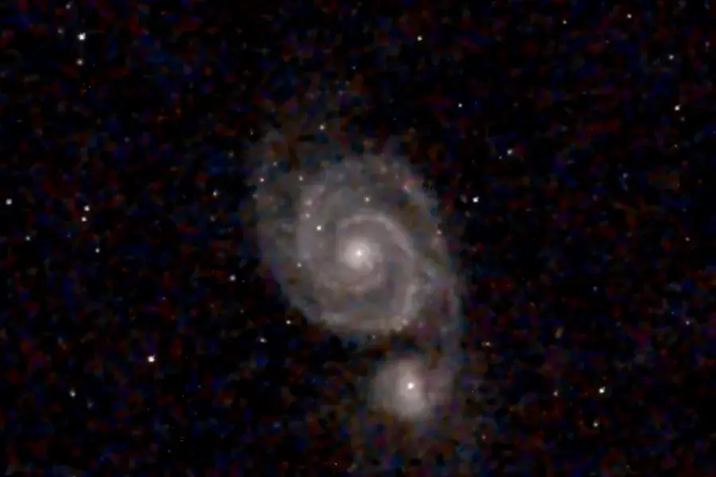
BeforeAfterWhat did not run
Phase 4 chooses its steps from the data, so another target runs a different chain. On this session these did not run:
- Colour noise reduction (
chroma_nr) Smooths colour noise where the denoiser has not. The neural network already covers it here.
- Sky residual
Takes out a faint leftover sky pattern. It is skipped for extended targets such as a galaxy, because it could mistake the target’s own outer light for sky.
- Other denoisers (
wavelet,bilateral,acdnr,aniso) The directional wavelet denoiser is the default when the neural network is not used; the others are opt-in with
--denoiser.- Gray-locus colour calibration (
photo_cal) A fallback colour calibration. It is skipped because the colours were already set from Gaia stars on the linear stack, before Phase 4.
- Star removal
Off unless you ask for it with
--remove-stars.
After Phase 4 the picture is still linear. The stretch that makes it look like a photograph is applied when the preview is made; see the stretch gallery, and Colour and finishing for how each step is done.